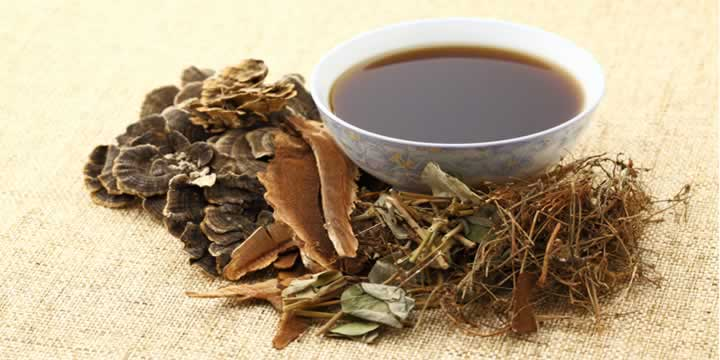

Program 3. kolovoza
Gatanje pomoću matematike: vjerojatnost i predviđanje zločina
Ako ste ikada gledali TV u sitne sate, vjerojatno ste vidjeli vidovnjake koji tvrde da vam mogu proreći budućnost ako ih nazovete, uglavnom koristeći neke magične instrumente. Iako su vidovnjaci daleko od stvarnosti, matematičari zapravo mogu koristiti izračune da bi predvidjeli vjerojatnost nekog događaja. Štoviše, možemo koristiti naše znanje vjerojatnosti kako bi razumjeli kada i gdje će se zločini (vjerojatno) odvijati, kako bi policija mogla raditi preventivno. Koristeći matematičke modele kombinirane s analizom tekstova na društvenim mrežama poput Twittera, matematika može pomoći policiji u borbi protiv kriminala prije nego što se on uopće dogodi. Na ovoj radionici raspravljat ćemo o tome kako ova primjena matematike funkcionira i pokušat ćemo napraviti neke pojednostavljene modele predviđanja.

Mario Borna Mjertan
Prirodoslovno-matematički fakultet, Sveučilište u Zagrebu, Hrvatska
Mario Borna je student matematike na Prirodoslovno-matematičkom fakultetu u Zagrebu. Voditelj je natjecanja u komunikaciji znanosti za srednjoškolce Znanstvenik u meni, a i sam se bavi popularizacijom matematike i računalstva. Obožava pse, a najdraže mu je poslije napornoga dana leći i gledati neku kvalitetnu seriju ili poslušati novi indie album.
Fotosintetski pigmenti - lovci na svjetlost koji stvaraju hranu
 Fotosinteza je metabolički proces kod biljaka, koji podrazumijeva stvaranje šećera korištenjem samo ugljikovog dioksida, vode i energije sunčeve svijetlosti. Šećeri su izvor energije za biljke i posredno, kroz hranidbeni lanac, za sve nas na planetu. Biljke vrše fotosintezu zahvaljujući grupi pigmenata - klorofilima, koji mogu “zarobiti" energiju svjetlosti i kroz niz kemijskih reakcija pretvoriti je u energiju koju biljke koriste za obavljanje životnih procesa. Kod vaskularnih biljaka nalazimo klorofile a i b zastupljene u različitim omjerima, što ovisi o kvaliteti svjetlosti kojoj su biljke izložene. U ovoj radionici izolirat ćemo pigmente iz listova koji su direktno bili izloženi suncu i iz onih koji su bili u sjeni, razdvojit ćemo ih i spektrofotometrijski izmjeriti apsorbanciju, na temelju koje ćemo moći izračunati koncentracije klorofila a i b.
Fotosinteza je metabolički proces kod biljaka, koji podrazumijeva stvaranje šećera korištenjem samo ugljikovog dioksida, vode i energije sunčeve svijetlosti. Šećeri su izvor energije za biljke i posredno, kroz hranidbeni lanac, za sve nas na planetu. Biljke vrše fotosintezu zahvaljujući grupi pigmenata - klorofilima, koji mogu “zarobiti" energiju svjetlosti i kroz niz kemijskih reakcija pretvoriti je u energiju koju biljke koriste za obavljanje životnih procesa. Kod vaskularnih biljaka nalazimo klorofile a i b zastupljene u različitim omjerima, što ovisi o kvaliteti svjetlosti kojoj su biljke izložene. U ovoj radionici izolirat ćemo pigmente iz listova koji su direktno bili izloženi suncu i iz onih koji su bili u sjeni, razdvojit ćemo ih i spektrofotometrijski izmjeriti apsorbanciju, na temelju koje ćemo moći izračunati koncentracije klorofila a i b.
Bojana Mićić
Istraživačka stanica Petnica, Srbija
Bojana Mićić je zaposlena na Odsjeku za biologiju u Istraživačkoj stanici Petnica, gdje uživa u kreiranju i realizaciji programa za srednjoškolce, a nekada i za učenike osnovnih škola i njihove nastavnike ili za sveučilišne studente. U okviru svoje doktorske disertacije istražuje neurotoksičnost zagađujućih tvari koje su detektirane u Dunavu. Voli dobru glazbu i ukusnu hranu, a kad nije na poslu, vjerojatno je na kampiranju s prijateljima ili planinari.
Računalna toksiologija: mogu li kemija i kompjuteri zamijeniti testiranja na životinjama?
Testiranje na životinjama je uobičajena metoda za procjenu kemijske toksičnosti. Postupak obično uključuje izlaganje životinja kemikaliji, te potom opažanje i kvantificiranje ekefata kemikalije. Rezultati se potom, više ili manje uspješno, preslikavaju na ljude. Unatoč značajnom napretku svih područja bioloških znanosti u zadnjim desetljećima, napredak toksikoloških testiranja je zanemariv, te su bitne promjene bile zakonske, a ne tehnološke. Trenutno postoje ustaljene smjernice za razne testove na životinjama koji su potrebni da bi se kemikalija razvila i stavila u proizvodnju, gdje svaki test može koštati do milijun eura i trajati po nekoliko godina (primjerice, kada je potrebno pratiti efekte kemikalije na potomstvo). Osim što su ovakva testiranja financijski teret, također se nameću etička pitanja vezana za dobrobit životinja - očito mora postojati bolji način za procjenu toksičnosti.
U ovoj ćemo radionici raspravljati o najnovijim napredcima u području računalne toksikologije i istražiti specifične izazove koji se susreću tijekom toksikoloških predviđanja, kao što je definiranje kemijske sličnosti i zapis kemijske strukture za računalnu analizu. Naposljetku ćemo sami pokušati predvidjeti toksikološke značajke nekih kemikalija iz eksperimentalnih podataka.
Kristijan Vuković
Institut za farmakološka istraživanja Mario Negri, Milano, Italija
Nakon završenog studija kemije na Prirodoslovno-matematičkom fakultetu u Zagrebu, Kristijan je započeo izradu doktorata na Institutu za farmakološka istraživanja Mario Negri u Italiji u sklopu Marie-Curie projekta 'in3', gdje se bavi razvojem računalnih modela za određivanje toksičnosti kemikalija. Slobodno vrijeme Kristijan uobičajeno provodi igrajući kartaške i društvene igre.
Cefeide: Mjerenje starosti Svemira brojanjem fotona
Cefeide, specifičan tip promjenjivih zvijezda, koriste se kao “standardne svijeće” za mjerenje udaljenosti u astronomiji. Mjerenjem perioda i sjaja ovih Zvijezda, astronomi mogu lako odrediti njihovu udaljenost. Hubbleov svemirski teleskop snimio je mnoštvo snimki različitih galaksija u Svemiru, s mnoštvom snimki Cefeida u njima. Mjerenjem njihovog sjaja, odredit ćemo njihovu udaljenost i udaljenost njihovih galaksija domaćina. Kada to pronađemo, Hubbleov zakon, jedan od osnovnih zakona u astronomiji, pomoći će nam da odredimo starost Svemira! Dakle, proputovat ćemo kroz jednu od najbitnijih epizoda u povijesti astronomije koristeći samo nekoliko astronomskih snimki i nekoliko osnovnih zakona astrofizike!
Miroslav Živanović
Sveučilište u Beogradu, Srbija
Miroslav je student četvrte godine fizike na Sveučilištu u Beogradu. Pohađao je seminare astronomije u Istraživačkoj stanici Petnica, a sada u nju odlazi kao student suradnik. Zanimaju ga interdisciplinarna istraživanja u vezi s klimatskim promjenama i metodama njihovog ublažavanja. U slobodno vrijeme voli dobru glazbu ili raspaliti roštilj (električni).
Biljke kao lijek
 Biljni lijekovi su najstariji poznati oblik terapije - postoje dokazi da su se koristili prije nekoliko desetaka tisuća godina u drevnoj Kini, Indiji i u Egiptu. Najpoznatiji oblik biljnog lijeka je čaj. Čaj je prvotno imao ulogu sredstva za liječenje, a ta uloga je djelomice zadržana i do danas, no jeste li se ikad zapitali što se točno nalazi u čajevima koje koristimo za liječenje određenih tegoba? Na radionici ćemo naučiti što su biljni ljekovi i upoznati se s nekima od njih. Proučit ćemo koru krkavine, list sene i list purpurnog naprstka, te aktivne spojeve odgovorne za njihova ljekovita svojstva. Nakon izolacije aktivnih spojeva i dokazivanja njihove prisutnosti kemijskim reakcijama, naučit ćemo kako izgledaju njihove strukture i koji dijelovi struktura su odgovorni za njihovo djelovanje.
Petra Parac
Farmaceutsko-biokemijski fakultet, Sveučilište u Zagrebu, Hrvatska
Petra je studentica farmacije na Farmaceutsko-biokemijskom fakultetu u Zagrebu. Također je članica udruge studenata farmacije i medicinske biokemije Hrvatske gdje sudjeluje u raznim javnozdravstvenim kampanjama. Inznimno je znatiželjna osoba s previše različitih interesa i uvijek u trci s vremenom. Uz znanost, za nju su najdivnije stvari na svijetu glazba, filmovi, knjige, a najvažnije priroda i ljudi oko nje.
 Tornada, divlje vrteći stupovi zraka, su jedno od najbijesnijih vremenskih događaja na našem planetu. Obično, brzina vjetra u tornadima je manja od 180 km/h te putuju tek nekoliko kilometara prije nego se raspadnu. Ipak, veća tornada traju duže (oko pola sata) s brzinama vjetra oko 480 km/h i mogu se micati po tlu desecima kilometara dižući zgrade u zrak iz temelja. U ovom projektu naučit ćemo što stvara tornada, zašto ih je teško predvidjeti te ćemo konačno razbiti nekoliko mitova o njima.
Tornada, divlje vrteći stupovi zraka, su jedno od najbijesnijih vremenskih događaja na našem planetu. Obično, brzina vjetra u tornadima je manja od 180 km/h te putuju tek nekoliko kilometara prije nego se raspadnu. Ipak, veća tornada traju duže (oko pola sata) s brzinama vjetra oko 480 km/h i mogu se micati po tlu desecima kilometara dižući zgrade u zrak iz temelja. U ovom projektu naučit ćemo što stvara tornada, zašto ih je teško predvidjeti te ćemo konačno razbiti nekoliko mitova o njima.